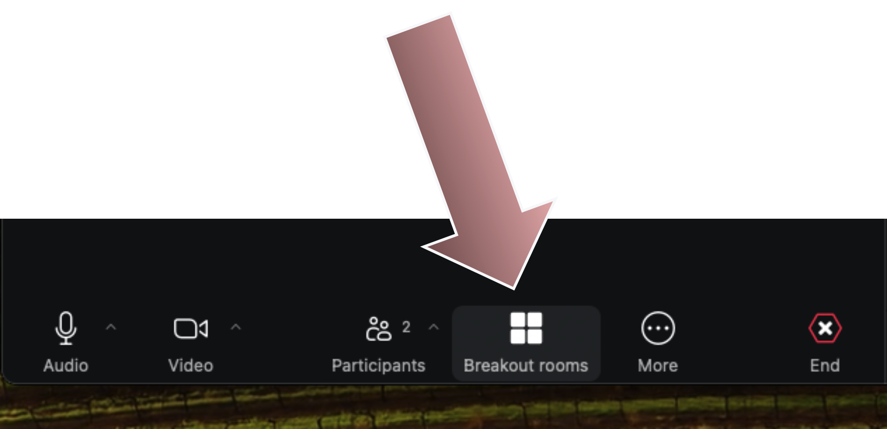
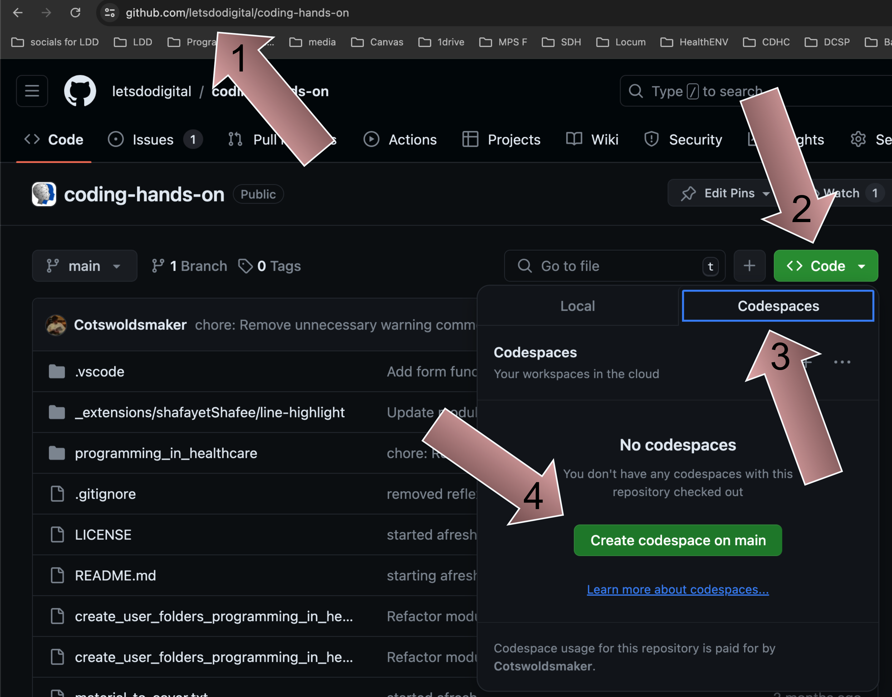

Python
Module 1
Let’s Do Digital Team
We will be using Python
The Python programming language
- A programming language interpreted and compiled at runtime.
- Its syntax emphasises readability and simplicity.
- It utilising indentation for code structuring.
- Widely used for web development, data analysis, AI / machine learning, and automation.
Reminder of the basics
- If you want a reminder of python basics, please visit the
module 0slides at https://letsdodigital.org/learn/learn-python/module-0/3-python-basics.html.
A function
a_function.py
Output
Hello World!
Woo Hoo!Error handling
- You can raise errors with
raise
raise_error.py
Other types include:
TypeError ZeroDivisionError FileNotFoundError IndexError KeyError
Handling potential exceptions
exception.py
Output
Conversion failed. Please enter a valid number.Class, please sit down!
Classes
- Much like functions are used to simplify reusable code,
classesare used to organise code at a higher level. - Classes are used to store
attributesandactionsof real life objects.
Anatomy of a class
classes.py
Anatomy of a class
classes.py
Naming conventions
- Variables, functions and methods
snake_case
- Classes
CamelCase
Anatomy of a class
classes.py
Creating an instance of the class
patient_1_vitals = VitalSigns(37.5, 80)
- This line of code creates an instance of the
VitalSignsclass. - Essentially you have created a VitalSigns
object. - Classes are an example of
object oriented programming.
Anatomy of a class
classes.py
- When you create an instance of a class (aka object) the
__init__method is automatically called. - Remember, a method is just a function inside a class.
Creating an instance of the class
- You have passed
37.5and80as arguments.
Anatomy of a class
classes.py
37.5is set as thetemperatureargument.80is set as theheart_rateargument.
Anatomy of a class
classes.py
One needs to know oneself
selfrefers to theinstanceof the class that you have just created, eg patient_1_vitals.selfallows the object you have created to keep track of its own data.selfis ALWAYS passed as an argument to methods of a class.selfis ALWAYS the first argument to methods in a class.
Anatomy of a class
classes.py
The dot operator
patient_1_vitals.display()
It may look strange, but the
.(dot) in between patient_1_vitals and display() is basically just a way to get data or use a method of a class.So in the instance above, you are basically saying:
“For the patient_1_vitals instance that I have created, please run the display() method.”
Remember, a method is just a function inside a class.
The final output
class VitalSigns:
def __init__(self, temperature, heart_rate):
self.temperature = temperature
self.heart_rate = heart_rate
def display(self):
print(f"Temperature: {self.temperature}°C")
print(f"Heart Rate: {self.heart_rate} bpm")
patient_1_vitals = VitalSigns(37.5, 80)
patient_1_vitals.display()Output:
Temperature: 37.5°C
Heart Rate: 80 bpmLibraries
Libraries
- Libraries are amazing. They will save you a lot of time and effort.
- Libraries are basically a collection of organised code that someone else (usually a group of people) has already written.
- You can use the functionality in these libraries within your own code.
Safety
- Of course, not every library is created equally. Some libraries are written better than others.
- This is very important to realise when you are looking to get consistent functionality from a library.
- Hence, choosing the wrong library, which could be poorly written, could affect patient care.
- We will talk about safety and code in future modules.
Installing libraries
- This is very easy, just use
pip
Preinstalled libraries
There are a large collection of preinstalled libraries in python, so you will not need to use
pipto install them.eg
os random datetime math json
Modules
- Modules are collections of code, which can be part of higher organisation levels, for example libraries.
- Hence, you can think of a module as a single book in a physical library.
Importing modules
- People say “import that library”.
- In fact, they are
importing a module.
Importing modules
- You use the
dot operatorto access the sub-modules, classes, methods and attributes within the imported module.
How to write
- It might seem daunting to write code, and you might be wondering where to start.
- The best way to write code is to just write it.
- Think a little about what you are going to write, but then write down a line of code and run the code. If it work, great! If it did not work, great too! Either way you have learnt something.
You got all that?
- Now it is your turn.
- Time for some hands on coding in
Lesson 1.
Computers are pedantic!
- Remember that computers think in
TrueandFalse, e.g.1and0s. They are literal thinkers. - Even one character being out of place can break an entire code base. So watch out for that
unpaired quotation mark, look out for thatspacethat should not be there, and make sure youmatch your indentations to your if statements. - Come back to these slides to remind yourself of key concepts - https://letsdodigital.org/learn/learn-python/module-1/
Lesson 1
- Make sure you have a GitHub account.
- Join your tutor group in the named
Zoom break out rooms. - Go to the page at https://github.com/letsdodigital/coding-hands-on
- Click on the
<> Codebutton and then theCodespacestab. - Click on
Create codespace on main
Codespace load

Codespace load

Ignore this
- Ignore the pop out about extensions you may get in the bottom right of Codespace
Get to your first lesson
- Change the directory (don’t type the
$. This is just how we show this is the command line):
- And then
- Did it work? If so, open up the exercise_1.py file.
- Any problems, just ask your tutor for help.
- There is no such thing as a stupid question, only the question left unanswered.
- We will give you 20 minutes for lesson 1.